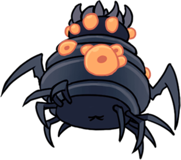

Bosses
Summary
Bosses are unique enemies in Hollow Knight with typically higher health or deal more damage than the standard creatures in the same area. The Knight may have to defeat a Boss to access a new area, acquire an item, complete a quest, or simply further the main story of the game. When the Knight encounters a Boss, their name will usually appear on-screen, and the music will change into a battle theme. There is a total of 47 bosses in the game.
| Character |
Description |
Location |
 |
The Broken Vessel is one of the main bosses in Hollow Knight. It blocks the way to the Monarch Wings. The Lost Kin is its dream variant. Broken Vessel is one of the many Vessels who escaped the Abyss like the Knight, but unlike the Knight, was met with a tragic death while still in Hallownest. Its corpse was forgotten in a windy cave deep within the Ancient Basin before the Monarch Wings where the Infection has spread. |
Broken Vessel can be found near the far west corner of the Ancient Basin, guarding the Monarch Wings Ability. |
|  |
The Brooding Mawlek is a hidden boss in Hollow Knight as well as a Colosseum of Fools mini-boss. One lone Brooding Mawlek can be found off-road in the Forgotten Crossroads, far from its living brethren in the Ancient Basin. It sits amidst fossilised remains of its kind and calls for them to breed. This wild beast was driven mad both by its loneliness and the Infection which started covering its body with bulbs. |
The Brooding Mawlek in the Forgotten Crossroads is found beyond a wall jump section in a blocked room to the left of the vertical shaft filled with Gruzzers and Tiktiks. It is possible to reach by Nail-bouncing on the spikes, although it is recommended to have obtained the Mantis Claw instead. Another Brooding Mawlek can be fought in the Colosseum of Fools as part of the Trial of the Fool.
|
|
The Collector is a hidden boss in Hollow Knight. Defeating it grants the Collector's Map. The Collector is a Void creature. It lives hidden away in the locked Tower of Love along with a large collection of bugs from throughout Hallownest that are preserved, both dead and alive, in glass jars. While always displaying a joyous demeanour, the Collector is only concerned with the preservation of other creatures. It trapped the Grubs from the Forgotten Crossroads colony and recorded their location throughout Hallownest on a map. Despite its attention to the Grubs, it only has three within its tower. It also has a connection to the previous owner of the key to the tower, a Hallownest aristocrat bug that can be found dead deep within the Queen's Gardens. |
The Collector is locked in the Tower of Love, which can only be accessed using the Love Key, found in the Queen's Gardens. The Tower can only be entered from the deep lift shaft between Kingdom's Edge and the City of Tears. An exit to King's Station can be accessed after flipping a switch. |
|
The Crystal Guardian is an optional boss in Hollow Knight. The Enraged Guardian is its second, stronger and faster form. Both forms have to be beaten to unlock its Journal entry. The Crystal Guardian is part of the miners of Crystal Peak who died from the Infection and were reanimated by it. It appears larger than the other husks, has crystal growing on its back and encasing both its arms and its head. It also has more mastery over the crystal's light than the Crystallised Husks. While encased in crystal, the Guardian shrieks similarly to the Radiance although at a higher pitch. When cleared of the crystal, it has a normal bug voice. Like the other miner husks, it is obsessed with the light but has grown too tired to mine it relentlessly as they do. |
The Crystal Guardian can be encountered for the first time in the Bench room in the centre of Crystal Peak. |
|
The Dung Defender is one of the main bosses in Hollow Knight. This champion of the past defends the access to Isma's Grove. The Hidden Dreams White Defender is his dream variant. The Dung Defender used to be known as Ogrim, the most loyal of the Five Great Knights of Hallownest. As such, he participated in many battles and adventures. He was also equally renowned for his bad scent, although that did not keep him from enjoying the company of the White Lady and his fellow knights. He was particularly fond of the knight Isma. Ogrim survived the Infection but isolated himself in a part of the Royal Waterways where refuse gathers. There, as the Dung Defender, he guards the pump control that allows entry to Isma's Grove on the other side of the sewers. The Dung Defender defies any who would enter the place to challenge him. He also passes time by rolling dung around and moulding statues out of it. The Dung Defender seems unaware of the fate of his king and the other knights. In his isolation, he deludes himself into thinking they will return and that Hallownest can be reborn. |
Dung Defender is located in the east part of the Royal Waterways. |
|
False Knight is one of the main bosses in Hollow Knight. He keeps the City Crest required to open the gates to the City of Tears. Failed Champion is his faster and stronger dream form. False Knight is a Maggot wearing the armour of Hegemol, one of the Five Great Knights of Hallownest. This weak creature wanted to find means to protect his siblings who live in an abandoned storeroom in the middle of the Forgotten Crossroads. When he discovered Hegemol sleeping in his armoured shell, he took it for himself, hoping for the great strength that wearing the armour seemed to promise. Even though madness did not drive him to do this, False Knight eventually fell to the Infection's control. |
False Knight is located in the centre of the Forgotten Crossroads. |
|
The Mantis Lords are an optional boss in Hollow Knight. Defeating them grants safe passage through the Mantis Village. The Godmaster Sisters of Battle is their stronger form. The Mantis Lords are three sisters who lead the Mantis Tribe deep within the Fungal Wastes. They managed to resist the Infection throughout Hallownest despite the exile of their brother and his followers, who chose to accept the Infection willingly. The Mantis Lords have kept the beasts of Deepnest confined to their territory, killing those who would intrude upon the village. This duty was part of a truce with the Kingdom, maintained even as it fell to ruins. Yet the Mantis Lords, like the rest of their Tribe, remain proud warriors. They grant passage into Deepnest to any who would defeat them in a fair challenge, in an improvised arena in their throne room. |
The area that the Mantis Lords are located in can be accessed after obtaining the Mantis Claw and activating a lever in the northwest part of the Mantis Village. |
|
Gruz mother is an optional mini-boss in Hollow Knight. She is also a dual Colosseum of Fools boss. Unlocking her Journal entry requires beating 3 Gruz Mothers. One Gruz Mother can be found blocking the direct path to an abandoned village at the bottom of the Forgotten Crossroads. She is sleeping, exhausted from carrying her children, and wakes up when struck. Upon defeat, her stomach bursts open to reveal a swarm of Gruzzers. Two more Gruz Mothers can be fought simultaneously at the end of the Trial of the Warrior. They do not spawn Gruzzers upon death. |
Gruz Mother can be found in the Forgotten Crossroads, sleeping peacefully until disturbed. |
|
Soul Master is a main boss in Hollow Knight. Defeating him grants the Desolate Dive Spell. The Soul Tyrant is his dream variant. Soul Master is the leader of the Soul Sanctum of Hallownest, which searched for ways to expand the minds of bugs and attain pure focus. When the Infection started, he came to the conclusion that Soul, the energy animating bugs and beasts alike, was the solution to cure their mind of this plague. He refused to listen to the Pale King opposing his work, and failed to realise that his own infected mind was influencing him. Soul Master hoarded Soul and consumed it, eventually gaining new Soul powers. He had Soul Totems gathered in the Sanctum and drained many unfortunate bugs of their vital energy. Unlike the rest of the Kingdom's inhabitants, he and his followers were able to survive the Infection. However, he was driven to obsession in his quest for immortality, and lost his sanity while trying to get closer to the light that was guiding him in his mind. |
Soul Master is located in the upper part of Soul Sanctum. |
|
The Watcher Knights are a single main boss in Hollow Knight. They guard Lurien the Watcher, one of the three Dreamers. Their Journal entry is unlocked at the end of the fight, regardless of how many there were. The Watcher Knights used to defend the entrance to the Watcher's Spire and Lurien's dormant body. They eventually died while standing guard, their discarded shells line the room. |
The Watcher Knights are located near the top of Watcher's Spire. |